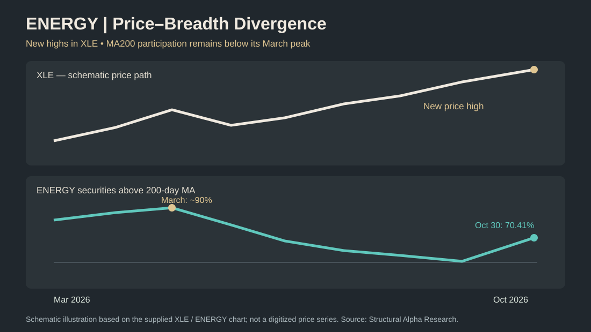

Observed: 113 of 169 tracked instruments advanced during October 23–30. Across the eight mining universes in the companion study, no universe exceeded 20% above MA200.
1. A broad and sustained recovery in market participation
The clearest signal in ENERGY is not its latest weekly return. It is the steady expansion in the number of instruments participating in the longer-term trend. At the October 30 close, 119 of the 169 tracked securities, or 70.41%, traded above their 200-day moving averages. Four weeks earlier, on October 2, the corresponding share was 57.40%. That represents an improvement of 13.02 percentage points in just one month.
The path matters. Breadth was 62.13% on September 25, declined to 57.40% on October 2, then recovered to 61.54% on October 9, 65.09% on October 16, 69.23% on October 23 and 70.41% on October 30. The indicator improved in each of the four latest weekly observations. The latest increase was modest compared with earlier October gains, but the direction remained positive.
ENERGY breadth — securities above MA200
This sequence distinguishes ENERGY from a rebound driven by a few exceptional performers. More than seven in ten tracked securities now satisfy a basic long-term trend condition. The median distance above the MA200 is approximately +9.95%, adding context to the simple count of securities above the average.
Interpretation: the market structure is constructive and participation is broad. This is an observation about the current cross-section, not proof that the next move will be higher. Breadth can deteriorate quickly, and the MA200 is a lagging measure.
2. Weekly performance and relative strength against the S&P 500
Between October 23 and October 30, the median return across the ENERGY universe was +1.28%, while the mean return was approximately +1.33%. Of the 169 tracked instruments, 113 advanced, 55 declined and one was unchanged. The advancing share was 66.86%.
The S&P 500 reference return for the same week was approximately −0.57%. About 71.60% of ENERGY instruments outperformed that benchmark. In other words, the positive median return was accompanied by widespread relative outperformance, even as the broader U.S. equity benchmark finished the week lower.
The weekly return alone would not make ENERGY the strongest of the 12 universes reviewed: ASX miners recorded a higher weekly median gain, and the STOXX 600 universe also exceeded ENERGY on that measure. ENERGY stands out for the combination of long-term breadth, improving participation, positive directional-volume measures and comparatively shallow drawdowns. This is a structural comparison, not a claim that ENERGY posted the largest weekly return.
Weekly median returns across the six recent observations were −3.72% on September 25, +0.55% on October 2, +2.46% on October 9, +2.05% on October 16, +1.11% on October 23 and +1.28% on October 30. A positive sequence after late September has coincided with improving breadth, but a few positive weeks should not be mistaken for a guaranteed durable advance.
3. Volume confirms better direction, not an exceptional surge in activity
Price breadth is only part of the picture. The median 20-session signed-volume balance increased from +6.64% on October 23 to +10.98% on October 30. The share of instruments showing a positive balance also improved, from approximately 62.13% to 70.41%, equivalent to 119 of 169 securities at the latest observation.
These figures suggest that favorable price sessions have increasingly been accompanied by a positive directional volume balance across the universe. They are consistent with broader participation in the recovery. However, signed volume is a classification-based indicator: it should not be interpreted as direct evidence of institutional buying or actual net capital inflows.
The separate measure of relative trading volume tells a more restrained story. Median five-session volume relative to the preceding 60-session reference period was 0.963×, compared with 0.946× one week earlier. Both readings remain below 1.0×, meaning typical recent activity has not exceeded the reference level. Only 16 of 169 securities, or 9.47%, recorded relative volume of at least 1.5×.
What the divergence means: the balance of volume has improved in direction, while overall trading intensity remains relatively ordinary. This is more consistent with an orderly, broadly supported advance than with a market-wide burst of exceptional turnover. Neither interpretation establishes what will happen next.
4. Drawdowns reveal a much less damaged price structure
The median decline from each instrument's 52-week closing high narrowed to −8.44% on October 30, from −9.70% a week earlier. This improvement is meaningful because it describes how far the typical tracked instrument remains below its own recent peak, rather than how much it gained in a single week.
Approximately 23.08% of ENERGY instruments were more than 20% below their 52-week highs; 15.38% were more than 30% below; and only 7.69% were more than 50% below. Most of the universe is therefore much closer to its annual highs than the deeply depressed areas of the mining market.
The contrast in the October 30 global review is substantial: median 52-week drawdowns were approximately −50.00% for the broad junior-miner universe, −55.56% for uranium and −64.91% for lithium. Silver miners and several copper-related groups also remained far below their annual peaks. Those figures describe different investment universes with different compositions and risk characteristics; they should not be treated as a controlled like-for-like sector experiment.
Interpretation: ENERGY's advantage is not just that more securities have risen recently. The typical instrument has experienced materially less damage relative to its own 52-week high. Shallow drawdowns can reflect resilience, but they do not eliminate downside risk.
5. Weekly winners versus persistent leadership
The complete ranking illustrates why a one-week leaderboard is not enough to identify sustained leadership. Among the strongest weekly performers were Solaris Energy Infrastructure (SEI, +20.36%), Range Resources (RRC, +20.01%), Precision Drilling (PD.TO, +12.48%), Nabors Industries (NBR, +12.03%), Patterson-UTI Energy (PTEN, +11.28%), Cheniere Energy (LNG, +10.60%) and Helmerich & Payne (HP, +10.37%).
But the comparison changes when the horizon is extended. SEI gained more than 20% in the latest week while remaining −5.65% over four weeks. RRC gained approximately 20% in the week and +42.90% over four weeks. The latter therefore shows a much more persistent recent performance profile, whereas the former's weekly surge does not erase its weaker four-week record.
These examples also demonstrate that strength is not restricted to a single business model. The weekly leaders include natural-gas producers, drilling companies, oilfield services and liquefied-natural-gas-related businesses. Nevertheless, this universe is deliberately broad: it also includes midstream, transportation, renewable-energy exposures and ETFs. It would be misleading to describe all 169 entries as independent oil and gas producers.
Why the full ranking matters: readers can compare every security across one week, four weeks, three months and year to date, rather than relying on a short selection of winners. The sortable table below includes the weekly rank, global rank, ticker, company name and last close alongside those four return horizons. A high rank is a research observation, not a buy recommendation.
6. Historical perspective: constructive, but not an extreme
The weekly summary history contains 153 observations from December 1, 2023, through October 30, 2026. This longer sample helps distinguish a favorable current reading from a historically exceptional one. Over the observed period, the share of ENERGY instruments above MA200 ranged from approximately 9.64% to 93.49%. The current 70.41% reading is around the 67th percentile of that series.
That position matters. The current breadth reading is clearly above the historical midpoint, but it is neither a record nor an extreme. The more interesting development is its recent trajectory: a recovery from 57.40% to 70.41% in four weeks, accompanied by positive median returns, an improving signed-volume balance and relatively limited drawdowns.
Historical comparisons also have limits. The tracked universe may change over time, and historical observations are not necessarily a point-in-time reconstruction of every security that would have been eligible in each past week. The percentile therefore describes the available historical series, not a definitive probability of future outcomes.
What would strengthen or weaken the interpretation?
Continued broad participation, sustained positive signed-volume balances and a stable or improving median drawdown would reinforce the present picture. A reversal in MA200 breadth, renewed weakness across a majority of constituents or a deterioration in directional volume would challenge it. Neither case is a prediction: these are observable conditions for monitoring the structure as new weekly data arrive.
7. A significant warning: XLE's new highs are not confirmed by market breadth
Observation from the accompanying chart: the Energy Select Sector SPDR Fund (XLE) has pushed to fresh highs around 70, while the percentage of tracked ENERGY securities trading above their 200-day moving average remains substantially below its March 2026 peak. The breadth measure approached 90% in March but stood at 70.41% on October 30. This is a medium-term bearish breadth divergence in the descriptive sense: the ETF's price is making new highs without a corresponding new high in the wider universe's long-term participation.

Two horizons, two different signals
The latest four-week breadth improvement remains real: participation rose from 57.40% on October 2 to 70.41% on October 30, a gain of 13.02 percentage points. But that short-term recovery has not reversed the larger deterioration from the March high. The two observations are compatible: energy can exhibit improving breadth over one month while its medium-term participation remains well below earlier peaks.
Volume participation offers only partial confirmation
The lower panel of the author's chart shows a volume-based breadth indicator well below its elevated March–May readings, despite a recent rebound. This is a second reason for caution. It is not equivalent to direct fund-flow data, and its visual levels should not be conflated with the separate 20-session signed-volume statistics used earlier in this study.
Why the divergence needs careful interpretation
XLE is a capitalization-weighted ETF, while this study's 169-instrument universe includes producers, services, transportation, alternative-energy securities, ETFs and some cross-listings. Consequently, the divergence does not prove that breadth among XLE's own constituents is deteriorating. It does, however, show that the broader tracked ENERGY universe has not matched the ETF's new highs with similarly widespread long-term participation. An ETF-component-only breadth study would be needed to test whether leadership has become more concentrated inside XLE itself.
Assessment: ENERGY remains relatively strong compared with the mining universes and has enjoyed a genuine October recovery in participation. Nevertheless, its medium-term breadth divergence remains unresolved. It warrants monitoring rather than an automatic bearish forecast: a renewed expansion toward the earlier breadth highs would strengthen confirmation, while another decline in participation despite rising XLE prices would deepen the warning.
8. Complete ENERGY ranking — 169 instruments
Search, sort and compare all tracked instruments. Weekly rank, global rank, ticker, company, last close, one-week, four-week, three-month and year-to-date returns are available for every row. Ranking positions are descriptive, not investment recommendations.
9. Methodology and limitations
Cutoff: October 30, 2026. Publication: October 31, 2026. Universe: 169 tracked ENERGY instruments. The historical weekly summary includes 153 observations since December 2023. The universe mixes producers, oilfield services, transportation, alternative energy, ETFs and some cross-listed securities; it is not a set of 169 independent operating companies.
MA200 breadth measures the share of eligible instruments above their 200-session moving average. Cross-sectional denominators can vary where data are unavailable. Changes in tracked constituents and historical coverage can affect comparisons. Signed volume is an approximation based on positive and negative sessions, not measured capital flows. Relative volume compares recent activity with a reference period. Proprietary trading rules and internal calculations are not disclosed. Read the public methodology guide.
Conclusion: relative strength, with an unresolved divergence
ENERGY remains among the strongest universes in our cross-market comparison. Its 70.41% MA200 breadth, four-week recovery in participation, positive directional-volume balance and comparatively shallow drawdowns support that relative assessment.
However, relative strength is not the same as full confirmation. XLE has made new highs while the tracked universe's share above MA200 remains far below its March peak. The author's longer-term volume-breadth chart also has not recovered its earlier highs. These divergences materially temper the constructive weekly picture.
Our conclusion is therefore constructive but cautious: October's improvement is measurable, yet the medium-term breadth divergence remains unresolved. Future updates should assess whether participation catches up with price or whether the gap widens. Neither outcome can be assumed in advance.